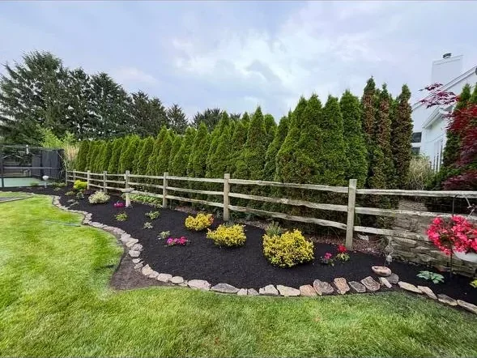

Northwest Ohio outdoor transformation
Fix the yard. Finish the property. Make it worth coming home to.
Landscape design, paver patios, drainage, lighting, cleanups, maintenance, and snow service for homeowners and properties that need outdoor work handled with real follow-through.
 Google Verified
Google VerifiedStart With The Project
What Do You Need Handled?
Pick the closest fit. Terramorph can scope related work together if the job crosses categories.
Featured work
Outdoor projects that make the property feel finished.
From patios and walkways to entry landscaping, drainage, lighting, and upkeep, the work should look intentional from the street, the backyard, and every place people actually use the property.
 Paver patios and walkwaysOutdoor living spaces, hardscape structure, steps, and gathering areas.
Paver patios and walkwaysOutdoor living spaces, hardscape structure, steps, and gathering areas.
 Landscape install and curb appealBeds, plantings, mulch, rock, edging, sod, and clean property presentation.
Landscape install and curb appealBeds, plantings, mulch, rock, edging, sod, and clean property presentation.
 Drainage and gradingWater routing, grading awareness, low spots, and wet-yard improvements.
Drainage and gradingWater routing, grading awareness, low spots, and wet-yard improvements.
 Lighting and finishing detailsPath lighting, accent lighting, visibility, and nighttime curb appeal.
Lighting and finishing detailsPath lighting, accent lighting, visibility, and nighttime curb appeal.
Core Services
The major outdoor problems Terramorph can solve.
Start with the project you need handled. Terramorph can scope the main work and the related details around it so the whole property feels cleaner and more complete.

Primary service
Landscape Installation and Design
Design planning, bed layouts, plant installation, sod, mulch, rock, edging, grading awareness, and full installation.
- Plant installation
- Mulch and rock beds
- Sod installation
- Bed shaping
- Native habitat rehabilitation

Primary service
Paver Patios and Walkways
Paver patios, walkways, seating areas, retaining details, steps, fire pits, outdoor kitchens, and hardscape structure.
- Patios
- Walkways
- Fire pits
- Outdoor kitchens
- Retaining walls
- Concrete coordination

Primary service
Drainage Solutions
Drainage diagnosis, grading, runoff routing, wet-yard solutions, soil-aware recommendations, and practical fixes for Northwest Ohio lots.
- Standing water
- Soggy lawns
- Downspout routing
- Grading
- Erosion control
- Dry creek features

Primary service
Outdoor Lighting
Low-voltage lighting for paths, patios, entries, landscape features, safety, security, and nighttime curb appeal.
- Path lights
- Accent lighting
- Patio lighting
- Entry lighting
- Security visibility

Primary service
Lawn Maintenance
Residential and commercial mowing, edging, trimming, bed upkeep, brush control, and recurring property presentation.
- Mowing
- Edging
- Trimming
- Weeding
- Bed maintenance
- Commercial maintenance

Primary service
Seasonal Cleanups
Spring and fall cleanups, pruning, leaf removal, debris removal, bed resets, overgrowth control, and property preparation.
- Spring cleanup
- Fall cleanup
- Leaf removal
- Spring pruning
- Tree and bush trimming
- Debris hauling

Primary service
Snow Removal
Dependable winter service for homes, businesses, and properties that need safe access when Northwest Ohio weather hits.
- Driveways
- Walkways
- Commercial lots
- Ice management
- Winter response
Local expertise
Locally owned, operated, licensed, insured, and trained for Northwest Ohio property problems.
Terramorph does not just send a mower and guess. The team includes licensed and insured professionals with certification-backed training, field experience, and the judgment to diagnose drainage, grading, plant health, hardscape base issues, maintenance needs, and seasonal property problems before recommending work.
See Our Local ApproachOfficial business information
The citation data Google, Meta, and directories should match.
Local platforms should use one clean version of Terramorph's name, phone, website, service area, and category. This gives citation tools, directory editors, and search engines a consistent source to reconcile against.
- Business name
- Terramorph LLC
- Phone
- 419-637-4030
- Website
- terramorphllc.com
- Primary area
- Perrysburg, OH 43551
- Service area
- Wood County, Lucas County, Perrysburg, Toledo, Maumee, and Northwest Ohio
- Category
- Landscaping, hardscaping, drainage, lawn care, and outdoor property services
If a directory shows a different phone number, misspelled street variation, old business name, or incomplete category, it should be corrected to match this page.
Proof Of Work
Real Terramorph work, shown before the quote form.
Photos come before reviews and forms so visitors see actual output before being asked to take action.

5-Star Google Reviews
Real names under real customer words.
Strong review excerpts pulled from Terramorph’s current Google review presentation, now shown with reviewer names instead of anonymous quotes.
★★★★★“Amazing service every time and prompt to all appointments.”
— CJ Miller
★★★★★“Great work at a fair price. They did what they said they were going to do, when they said they would do it. Fast, friendly. Will definitely use them again.”
— Richard Hansen
★★★★★“Ty and his team put hydro mulch down in my front yard and they did an excellent job. The grass is looking awesome! Thanks guys.”
— Derrick Fawley
★★★★★“I am so impressed with Ty and Terramorph. I called on a Monday and they did the landscaping on Friday. It looks fantastic. A great group of hard working young men. Would recommend to everyone.”
— Barb Flowers
★★★★★“Fast and reliable. Ty did excellent work and very reasonable cost. I would not hesitate to suggest him to others. Thanks Ty!”
— Larry Calcamuggio
★★★★★“Wonderful experience with the young men that worked on my waterfall. They did a good job.”
— Karen Chiaverini
Property-First Planning
A simpler path from property problem to estimate.
Start with the property problem, review the right service options, see real work and named customer reviews, then request a clear estimate.
Fast free estimate
Request My Outdoor Transformation Quote
Tell Terramorph what is happening, where the property is, and when you want it handled. The request goes into Jobber so the team can follow up with the right service, city, photos, and timeline.
If the embedded form does not load, open the secure request form directly.
Open Secure Quote FormCall 419-637-4030Named Google Review Proof
Real words from homeowners who already trusted Terramorph.
★★★★★“Amazing service every time and prompt to all appointments.”
— CJ Miller
★★★★★“Great work at a fair price. They did what they said they were going to do, when they said they would do it. Fast, friendly. Will definitely use them again.”
— Richard Hansen
★★★★★“Ty and his team put hydro mulch down in my front yard and they did an excellent job. The grass is looking awesome! Thanks guys.”
— Derrick Fawley
★★★★★“I am so impressed with Ty and Terramorph. I called on a Monday and they did the landscaping on Friday. It looks fantastic. A great group of hard working young men. Would recommend to everyone.”
— Barb Flowers
★★★★★“Fast and reliable. Ty did excellent work and very reasonable cost. I would not hesitate to suggest him to others. Thanks Ty!”
— Larry Calcamuggio
- Free estimates for projects, cleanups, and maintenance
- Fast phone call option on every device
- Google reviews, BBB Membership, and license/insurance proof nearby
- Project proof and named reviews before the request form